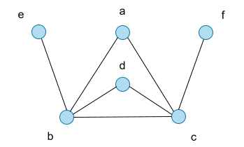

\[ \newcommand{\mc}[1]{\mathcal{#1}} \newcommand{\ramseyth}{https://en.wikipedia.org/wiki/Ramsey%27s_theorem} \newcommand{\ramsey}{https://google.com} \newcommand{\pigeon}{https://google.com} \newcommand{\fol}{} \newcommand{\godel}{} \newcommand{\graph}{} \newcommand{\ramseypaper}{} \newcommand{\compactness}{} \newcommand{\modelth}{} \newcommand{\completeness}{} \newcommand{\los}{} \newcommand{\ultraproduct}{} \newcommand{\toread}{https://web.iitd.ac.in/~atripath/publications/Ramsey_TAS.pdf} \]
Ramsey’s theorem is a famous theorem from combinatorics that was proven by the British mathematician Frank Ramsey in 1930. It gives one instance of inevitable order arising in a system when the system scales. The theorem launched a whole area of combinatorics called Ramsey Theory which is largely a collection of results in the same spirit as Ramsey’s.
A clique, respectively independent set, in a graph is set of vertices of the graph such that every pair of (distinct) vertices is adjacent, resp. non-adjacent in the graph. For instance in the graph below, vertices \(a, b, c\) form a clique of size 3, while vertices \(a, d, e, f\) form an independent set of size 4.

Graph containing a clique of size 3 and an independent set of size 4
In his now classic paper On a problem of formal logic, Ramsey proved a remarkable result: that every large enough graph always contains either a clique or an independent set of a given size.
Theorem 1 (Ramsey, 1930). There exists a function \(R: \mathbb{N} \rightarrow \mathbb{N}\) such that for every natural number \(n\), every graph of size \(\ge R(n)\) contains either a clique or an independent set of size \(n\).
There are combinatorial proofs of this theorem that further give good upper bounds on \(R(n)\). We shall however look at a proof that just proves the existence of the function \(R\), but that is based on an elegant infinitary argument using mathematical logic. Towards this, let us first look at an infinitary version of Ramsey’s theorem.
The theorem is as stated below. In the light of this result, Theorem 1 can be regarded as a “finitary” Ramsey theorem.
Theorem 2 (Ramsey, 1930). Every infinite graph contains either an infinite clique or an infinite independent set.
Proof. Let \(G\) be an infinite graph. Consider an arbitrary vertex \(a_1\) of \(G\). Let \(S_{1, 0}\) be the set of all vertices of \(G\) not adjacent to \(a_1\), and likewise let \(S_{1, 1}\) be the set of all vertices of \(G\) adjacent to \(a_1\). Since \(a_1\), \(S_{1, 0}\) and \(S_{1, 1}\) together constitute all the vertices of \(G\), it follows for some \(i_1 \in \{0, 1\}\), that \(S_{1, i_1}\) is infinite.
Let \(G_2\) be the subgraph of \(G\) induced by \(S_{1, i_1}\). Let \(a_2\) be an arbitrary vertex of \(G_2\), and \(S_{2, 0}\), resp. \(S_{2, 1}\), be the set of vertices of \(G_2\) that are non-adjacent, resp. adjacent, to \(a_2\). Then by a similar argument as above, we have for some \(i_2 \in \{0,1\}\), that \(S_{2, i_2}\) is infinite.
Continuing this way, we get an infinite sequence \(\alpha = (a_1, a_2, \ldots)\) of vertices of \(G\) and an infinite binary sequence \(\iota = (i_1, i_2, \ldots)\) such that for \(j \ge 1\), if \(i_j = 1\), then the vertex \(a_j\) is adjacent to all \(a_k\) for \(k > j\), and if \(i_j = 0\), then \(a_j\) is non-adjacent to all \(a_k\) for \(k > j\). Since \(\iota\) is an infinite binary sequence, there exists by the pigenhole principle, an infinite subsequence \(\gamma = (i_{j_1}, i_{j_2}, \ldots)\) of \(\iota\) for \(j_1 < j_2 < \ldots\), that either consists only of 0s or consists only of 1s. It then follows that the subsequence \((a_{j_1}, a_{j_2}, \ldots)\) of \(\alpha\) is such that either all vertices in the sequence are adjacent to each other, or all vertices in the sequence are non-adjacent to each other. In other words, \(G\) either contains an infinite clique or an infinite independent set.
We will need a bit of background from mathematical logic for the proof of Theorem 1. The language of first order logic, abbreviated FO, is a formal language in which interesting properties of various kinds of mathematical structures can be expressed. For instance, to say that a graph is a clique is to express “For all vertices \(x\) and for all vertices \(y\), there is an edge between \(x\) and \(y\)”. In the language of FO, this property can be expressed as \[\forall x \forall y E(x, y)\]where \(\forall\) is a quantifier that stands for “for all” (indeed \(\forall\) is an inverted A) and \(E\) is a binary relation symbol denoting the edge relation. Likewise, the property that a graph contains a triangle is expressed by the sentence \[\exists x \exists y \exists z\, \big(\neg (x = y) \wedge \neg (y = z) \wedge \neg (x = z) \wedge E(x, y) \wedge E(y, z) \wedge E(z, x) \big)\]where \(\exists\) is a quantifier denoting “there exists” (indeed \(\exists\) is a flipped E), \(\neg\) denotes “it is not the case that” and \(\wedge\) denotes “and”. The sentence thus talks about the existence of three distinct vertices \(x, y\) and \(z\) that are pair-wise adjacent. Without going into the formal technical definition of FO, it just suffices for us here to understand that FO is the collection of all sentences like the ones above, that are built up from simple expressions of the form \(E(x, y)\) and \(x = y\) inductively using the Boolean connectives \(\wedge\) and \(\neg\) and the quantifiers \(\exists\) and \(\forall\).
The above describes the syntax of FO. We now delve briefly into the semantics of this language. Given an FO sentence and a graph, one can talk about whether the sentence is true in the graph or not. For instance, the sentence \(\varphi_1\) above expressing the clique property is true in the graph \(G_1\) below, while sentence \(\varphi_2\) that asserts the existence of a triangle is false in \(G_2\).
In this case, we say \(G_1\) is a model of \(\varphi_1\), or simply \(G_1\) models \(\varphi_1\), and likewise that \(G_2\) does not model \(\varphi_2\), or simply \(G_2\) is a non-model of \(\varphi_2\).
Once again, we will not go into the formal definition of the semantics of FO here, but it suffices for our purposes to note that for any given FO sentence \(\varphi\) and any given graph \(G\), either \(G\) models \(\varphi\) or it does not.
The heart of the proof of Ramsey’s theorem that we will see in the next section, uses a very important result concerning FO, that was proven by the celebrated logician Kurt Gödel in 1930 (interesting coincidence with Ramsey!). This result, called the Compactness theorem, is one of the most central results in the subject of model theory that studies the relationship between the syntax and semantics of FO (and other logics as well). To state the result, we observe that the notion of a graph \(G\) being a model or non-model of an FO sentence can be extended naturally to it being a model or non-model of a collection \(\mc{S}\) of FO sentences – \(G\) is a model of \(\mc{S}\) precisely when it models every sentence of \(\mc{S}\). The theorem now states the following.
Theorem 3 (Compactness theorem; Gödel, 1930). Let \(\mc{S}\) be a set of FO sentences. If every finite subset of \(\mc{S}\) has a model, then \(\mc{S}\) has a model.
The theorem thus enables us to reason about models of an infinite set of sentences simply by reasoning about models of finite subsets of it. The original proof of the theorem by Gödel was via his famous Completeness theorem for FO, and showed the theorem in its “existential form” as stated above, i.e. the existence of models for the infinite set assuming the existence of models for its finite subsets. Later, Jerzy Lós gave an alternate constructive proof of this theorem that showed how to put together the models of the finite subsets via an ultraproduct construction to get a model of the infinite set. We however will be concerned only with the existential form for our purposes.
The Compactness theorem is typically used to prove results about infinite structures. We now see an application of it to prove a finitary result too, namely Theorem 1.
Proof (Proof of Theorem 1). Let \(n\) be a given natural number. Let \(\mathsf{Clique}_n\) and \(\mathsf{Indept}_n\) be FO sentences that respectively express that a graph contains a clique of size \(n\) and an independent set of size \(n\). So for instance, for \(n = 3\), we have the following: \[ \begin{align*} \mathsf{Clique}_3 &:= \varphi_2 ~\text{(as seen above)}\\ \mathsf{Indept}_3 &:= \exists x \exists y \exists z \,\big(\neg (x = y) \wedge \neg (y = z) \wedge \neg (x = z) \wedge \neg E(x, y) \wedge \neg E(y, z) \wedge \neg E(z, x) \big) \end{align*} \] Let now \(\lambda_j\) be the sentence that expresses that a graph has at least \(j\) vertices. So for instance, for \(j = 3\), we have \[\lambda_3 := \exists x \exists y \exists z \big( \neg (x = y) \wedge \neg (y = z) \wedge \neg (x = z) \big)\]Consider now the set \(\mc{S}\) of sentences given by \[\mc{S} := \{ \neg \mathsf{Clique}_n, \neg \mathsf{Indept}_n \} \,\bigcup\, \{\lambda_j \mid j \ge 1\}\] Claim. The set \(\mc{S}\) is unsatisfiable.
Why? For if not, then suppose a graph \(G\) models \(\mc{S}\). This graph must be infinite since it is a model of \(\lambda_j\) for every \(j\). Now by the infinitary Ramsey theorem, namely Theorem 2 above, \(G\) must contain an infinite clique or an infinite independent set. Then it must have either a clique of size \(n\) or an independent set of size \(n\). But this contradicts the assumption that \(G\) models \(\neg \mathsf{Clique}_n\) and \(\neg \mathsf{Indept}_n\).
So \(\mc{S}\) is unsatisfiable. By the Compactness theorem, namely Theorem 3, in contrapositive form, there is a finite (and non-empty) subset \(\mc{T}\) of \(\mc{S}\) that is unsatisfiable. Then \(\mc{T} = \mc{T}_1 \cup \mc{T}_2\) where \(\mc{T}_1\) is a finite subset of \(\{\lambda_j \mid j \ge 1\}\) and \(\mc{T}_2\) is a subset of \(\{\neg \mathsf{Clique}_n, \neg \mathsf{Indept}_n\}\). Observe that \(\mc{T}_1\) must be non-empty since if not, then \(\mc{T}\) is a subset of \(\{\neg \mathsf{Clique}_n, \neg \mathsf{Indept}_n\}\). But the latter set is satisfiable; for instance, any graph containing less than \(n\) vertices is a model for the set.
So \(\mc{T}_1\) must be non-empty and since \(\lambda_j\) implies \(\lambda_k\) whenever \(j \ge k\), we can, without loss of generality, assume \(\mc{T}_1\) to be a singleton, say \(\{\lambda_r\}\). Now since \(\mc{T}\) is unsatisfiable, so is \(\mc{T}_1 \cup \{\neg \mathsf{Clique}_n, \neg \mathsf{Indept}_n\}\). That is, \(\{\lambda_r, \neg \mathsf{Clique}_n, \neg \mathsf{Indept}_n\}\) is unsatisfiable. Then \(\lambda_r\) implies \(\mathsf{Clique}_n \vee \mathsf{Indept}_n\). In other words, any graph of size \(\ge r\) contains a clique or an independent set of size \(n\). Taking \(R(n) = r\), we find that Theorem 1 is indeed true.